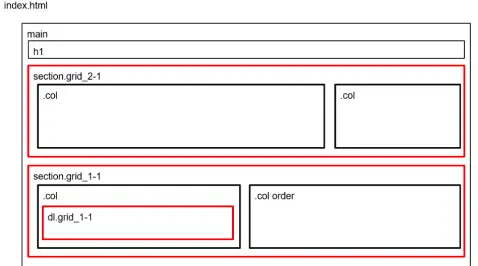
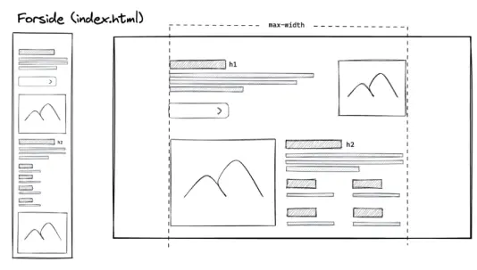

Portfolio
Grundlæggende Web
I grundlæggende web lærte vi om brugervenlighed, centrale principper indenfor design af brugergrænseflader, responsivt design og anvendelsen af VSC - Visual Studio Code, inklusiv relevante plug-ins og developer tools.
Computer site
I opgaven til computer sitet skulle vi bruge vores viden om designkonventioner, gestaltlove og wireframes, med henblik på at udarbejde to opgaver. Vores første opgave var et "mobilefirst", med fokus på brugervenlighed og det responsive design. I "mobilefirst" arbejdede vi med css grid, flex og media queries.
Denne opgave blev efterfølgende til vores studiestartsprøve, hvor vi for alvor skulle bruge vores nye viden om brugergrænseflader, design konventionerne og følge de uddelte layoutdiagrammer og wireframes.
  Computersite